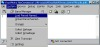
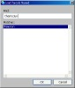
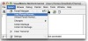
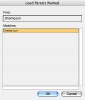
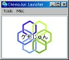
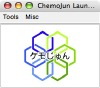

2006年08月22日 文責：浅岡 浩子
もくじ：
パーセルのインストールをすると、システムを利用できるとともに、ソースコードを確認することができます。
VisualWorks や Jun などの開発環境をインストールする必要がありますが、バージョンアップの際、 新しいパーセルのみをダウンロードするだけで、新しいバージョンを利用することができます。
このページでは、パーセルのインストール方法を解説します。
Windows & Macintosh 版 での説明ですが、 それぞれ違う箇所は、以下のように背景色を変えています。
|
Windows 版 の説明 |
Macintosh 版 の説明 |
また、これらの解説では、 Jun for Smalltalk インストール に沿って、すでに「じゅん」の動作に必要なものが正常にインストールされているものとします。
インストールする時に作成する各ディレクトリの場所は、以下のように決めたものとします。
|
$(HOME) |
|
|---|---|
|
|
|
| インストールディレクトリ | $(HOME)/Smalltalk/vw7.4.1nc |
| ベースディレクトリ | $(HOME)/Smalltalk/Base4vw741nc |
| ワークディレクトリ | $(HOME)/Smalltalk/ChemoJun4vw741nc |
以下のものが必要となります。
注：（）内の ??? は、000 もしくはバージョン番号になります。
詳細は Jun for Smalltalk インストール を参照してください。
分子ファイルを扱うなどの操作をする際に必要となる化学系オープンソースライブラリです。
「ケモじゅん」のパーセルファイルを用意します。
インストールディレクトリ の中の「contributed」に、 「ChemoJun」ディレクトリを新規作成します。
ここに、パーセルファイルを解凍してできるファイル（ChemoJun???.pcl, ChemoJun???.pst）を移動させます。
古いバージョンのパーセルファイルがある場合は、削除しておいてください。
最終的に、以下のようになっていることを確認しましょう。
$(インストールディレクトリ) +- contributed +- ChemoJun +- ChemoJun???.pcl +- ChemoJun???.pst
また、ワークディレクトリに「ChemoJun」ディレクトリへのショートカットを作成しておくとよいでしょう。
バージョンアップするときなど、すぐにたどることが出来て便利です。
ワークディレクトリ で VisualWorks を起動します。
VisualWorks の System メニューから Load Parcel Named... を選択します。
出現するダイアログに「ChemoJun」と入力すると、 インストールディレクトリ内にあるパーセルを自動的に検索し、下の覧に表示してくれます。
ロードするパーセルが選択されていることを確認し、「OK」ボタンを押します。
|   |   |
この際、パーセルファイルと、VisualWorks のバージョンが合っていないと、 パーセルファイルを読み込むことができません。
読み込めない場合は、バージョンを確認してください。
<参考>
VisualWorks のバージョンに対応するパーセルファイルがない場合は、ソースファイル（ChemoJun???.zip）からインストールする方法もあります。
ソースファイルからインストールする方法は、「じゅん」と同様です。
Jun for Smalltalk インストール を参照してください。
「ケモじゅん」が読み込まれると、 VisualWorks のランチャーにインストールされたことが表示され、ケモじゅんランチャーが開きます。
ケモじゅんランチャーを適当な場所に配置します。
ガーベジコレクションをして、VisualWorks の仮想イメージをセーブしておきましょう。
|  |  |
仮想イメージを保存したら、一度、「ケモじゅん」を終了させておきましょう。
ケモじゅんで必要なメモリスペースを、次の起動時から確保するようになります。
{kind=link}
{kind=link}
{kind=link}
{kind=link}
{kind=link}
{kind=link}